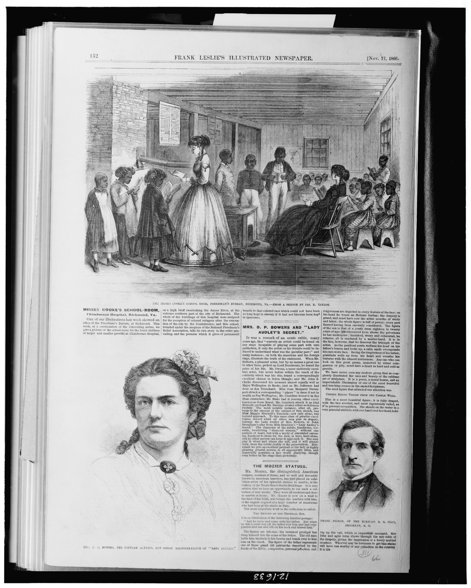

Directions: The five stations below are the record of freedom built on the ground between 1865 and 1874. Study each station and answer its questions. At every station, state what asset, skill, or protection the record put in freedpeople's hands, and what it left in others' hands. In Part 2, judge whether the sharecropping settlement was a compromise, a defeat, or both at once for different families, and defend your judgment.
Source: a teaching summary of General William T. Sherman's Special Field Orders No. 15, built from the public record of the order and its settlement. It is a summary, not a quotation, and it is labeled as one here so that nothing in it is mistaken for a period text.
On January 12, 1865, Sherman and Secretary of War Edwin Stanton met twenty Black ministers and church officers in Savannah, and the men's chosen spokesman, the minister Garrison Frazier, told them that freedpeople could best take care of themselves on land of their own, worked by their own labor. Four days later Sherman issued Special Field Orders No. 15. The order reserved the islands off the coasts of South Carolina, Georgia, and Florida and a strip of mainland along the rivers for thirty miles back from the sea, some four hundred thousand acres in all, for the settlement of freed families. No white person except soldiers and officers on duty was to live in the reserve. Each family head could claim a plot of not more than forty acres of tillable ground, and a military inspector issued a possessory title and supervised the settlements. The freed families were to manage their own affairs, subject to military authority and to Congress. Army mules were lent to some of the settlers. By the summer of 1865 some forty thousand freedpeople had settled in the reserve and were planting crops on land they expected to make their own.
State what this record put in freedpeople's hands, in order: the land itself, the size of the largest plot, the paper that evidenced a family's claim, and the management of the settlements' own affairs. Then state the limit built into the gift. The order was a military order, issued by a general in the field, resting on the laws of war. Name the two authorities that could undo it without asking the settlers, and state why a settlement resting on an order was weaker than one resting on a statute or a deed in fee simple.
Source: a teaching summary of a sharecropping contract's standard terms, drawn from the audited TPSP bank record of an 1879 Louisiana contract (Solid South and John Dawson, Waterford Plantation, Madison Parish; Gilder Lehrman Institute, by way of the Chicago Daily Tribune, April 30, 1879, as the record's sourceNote names). The summary is drawn from an 1879 contract because the system's standard terms are what this lesson teaches. The contract itself is dated 1879, after this unit's 1877 close, and it is not reprinted here. It is a summary, not a quotation.
Under the contract's standard terms, the landowner leased a family fifteen acres for one year. In place of money rent, the family owed a fixed quantity of lint cotton, delivered at the landowner's gin. The family farmed under the landowner's general superintendence, kept the ditches, paths, bridges, and fences in repair at its own expense, and surrendered the land peaceably at the year's end. All cottonseed grown on the plot belonged to the plantation, and nothing could be sold on the land without the owner's consent. If the owner furnished money, supplies, livestock, or materials to make the crop, up to a stated maximum, the family repaid the advances out of the first cotton picked, delivered to the owner's gin, where the owner could buy the cotton or ship it as he chose, the whole supply bill due by the first of January. All cotton grown on the plot had to be ginned at the owner's gin, at a stated charge per bale, and the rent cotton was paid after the supply bill. To secure both payments, the family pledged the crop and all its livestock, tools, and personal property, and waived the protection of the state's homestead and exemption laws, so that everything it owned could be seized and sold on a default. Any violation of the contract canceled the lease.
Work through the terms as a chain. State which single term gives the landowner control of the crop before it exists, which two terms fix where the cotton must go and who prices its handling, and which term puts the family's mules, tools, and household property behind the debt. Then state the other side honestly: what did the family hold under this contract that it had not held under the gang contract of Station work in the reading, naming the plot, the pace of its own labor, and the share it could keep in a good year?
Source: a teaching summary of the freedmen's school movement, built from the public record of the Freedmen's Bureau's education reports and the missionary societies' reports. It is a summary, not a quotation, and it is labeled as one here so that nothing in it is mistaken for a period text.
The schools began with freedpeople themselves. Communities taxed themselves, paid monthly tuition from field wages, bought lots, donated labor, and raised schoolhouse frames before many of them had a church building, because a schoolhouse was the first public building freedom required. Northern missionary societies, the American Missionary Association chief among them, sent teachers and money, and the Freedmen's Bureau rented and repaired buildings, paid transportation for teachers, and reported the whole effort in its education returns. The teachers were increasingly Black men and women, many of them educated in the schools' own upper classes, alongside northern teachers, most of them women. The students were children in the day schools and adults in night and Sabbath schools, learning the literacy slavery had made a crime to teach. By 1870 the Bureau's returns counted some quarter of a million students in the freedmen's schools. The schools had enemies. Schoolhouses were burned and teachers were threatened and driven from some communities by white southerners who understood, as the communities did, that a literate electorate could not be governed as a labor force had been. The Reconstruction constitutions of 1867 and 1868 took the movement into state law, founding the South's first public school systems on foundations the communities had dug themselves.

State who paid for the schools, naming three sources of money or labor in the summary, and state who taught in them. Then state what the enrollment figure of 1870 measures and what it cannot measure. A quarter of a million students is a count of attendance, not of learning completed. What else would you need to know to judge what the schools delivered, and why does the summary treat the burned schoolhouses as evidence about the schools, and not only about their enemies?
Source: a teaching summary of the Freedmen's Savings Bank's charter and failure, built from the public record of the bank's charter, its reports, and its failure. It is a summary, not a quotation, and it is labeled as one here so that nothing in it is mistaken for a period text.
Congress chartered the Freedman's Savings and Trust Company on March 3, 1865, the same day it created the Freedmen's Bureau, to hold the savings of Black soldiers and freedpeople. Branches opened in cities across the South, thirty seven in all over the bank's life, and their clerks took deposits as small as a few cents from laborers, washerwomen, porters, and soldiers saving their bounties and back pay. A family's passbook was often the first financial document it had ever owned, and the deposits, tens of thousands of families saving wages and garden money a little at a time, were freedom practiced as a discipline: money set aside against sickness, for a lot, for tools, for a child's schooling. The charter confined the bank to safe investments at first. In 1870 Congress loosened the charter, and the bank's managers lent depositors' money into railroads and real estate speculation and borrowed against the bank's own assets. The Panic of 1873 broke the borrowers, and in 1874 the bank failed, owing some three million dollars to more than sixty thousand depositors. Commissioners wound it up over the following years and returned part of what was owed. Much of what tens of thousands of families had saved was gone.
State what the bank put in freedpeople's hands while it stood, naming the passbook, the small deposit, and the uses families saved toward. Then state the sequence of its fall, in order: the charter loosened, the managers' speculation, the panic, the failure, with the number of depositors the failure reached. A depositor in 1868 could see the branch, the passbook, and the charter of Congress. What could she not see, and why does that limit belong in any judgment of the families who saved?
Source: Henry Bram, Ishmael Moultrie, Yates Sampson (committee of freedmen), 'Petition of the Freedmen of Edisto Island,' 1865 (Critical Explorers; original spellings preserved; original spelling preserved), as carried in the audited TPSP bank record. This petition returns from Lesson 1 by design, and its return is disclosed here: you read it at the unit's opening as a demand, and you read it again now as the land question's own statement, with the settlement's whole record behind you. The bank record's cuts are marked with ellipses in brackets, and the petition's original spellings stand as the edition carries them.
Edisto Island S.C. Oct 28th 1865.
We the freedmen of Edisto Island South Carolina have learned from you through Major General O. O. Howard, commissioner of the Freedmen's Bureau, with deep sorrow and painful hearts, of the possibility of goverment restoring these lands to the former owners.
[...]
Here is where secession was born and nurtured. Here is where we have toiled nearly all our lives as slaves and were treated like dumb driven cattle. This is our home, we have made these lands what they are. We were the only true and loyal people that were found in possession of these lands. We have been always ready to strike for liberty and humanity, yea to fight if needs be to preserve this glorious union. Shall not we who are freedmen and have been always true to this Union have the same rights as are enjoyed by others? Have we broken any law of these United States? Have we forfieted our rights of property in land? If not then! are not our rights as a free people and good citizens of these United States to be considered before the rights of those who were found in rebellion against this good and just Goverment (and now being conquered) come (as they seem) with penitent hearts and beg forgiveness for past offences and also ask if thier lands cannot be restored to them? Are these rebellious spirits to be reinstated in thier possessions and we who have been abused and oppressed for many long years not to be allowed the Privilige of purchasing land but be subject to the will of these large land owners?
[...]
We have been encouraged by government to take up these lands in small tracts, receiving certificates of the same. We have thus far taken sixteen thousand (16000) acres of land here on this Island. We are ready to pay for this land when government calls for it. And now after what has been done will the good and just government take from us all this right and make us subject to the will of those who have cheated and oppressed us for many years? God forbid! We the freedmen of this island and of the State of South Carolina do therefore petition to you as the President of these United States, that some provisions be made by which every colored man can purchase land and hold it as his own. We wish to have a home if it be but a few acres. Without some provision is made our future is sad to look upon, yes our situation is dangerous.
[...]
In behalf of the Freedmen
Henry Bram, Committee
Ishmael Moultrie
Yates Sampson
Rebuild the petition's claim in its own order. State the two grounds on which the petitioners rest their right to the land, quoting the sentence that carries each one, state the acreage they say they have taken up and the payment they offer, and state the exact provision they ask the president to make. Then set the petition beside Station 1. The order gave the land, and the petition asks to buy it. What does the difference between a gift by military order and a purchase held as one's own tell you about what the petitioners understood, in October 1865, about the ground their settlement stood on?
The five stations, with the reading, are the evidence for your judgment of the sharecropping settlement. Sort first, then judge.
The sorting. Enter each station number twice, once under what the record put in freedpeople's hands and once under what it left in others' hands, with one named term, figure, or quoted phrase as the evidence each time: land and self management at Station 1, the contract's pledges at Station 2, literacy and the schoolhouse at Station 3, the passbook and the deposits at Station 4, and the claim of labor and loyalty at Station 5.
Your verdict. Judge whether the sharecropping settlement was a compromise, a defeat, or both at once for different families. Defend the judgment in a paragraph. Your verdict must use at least three stations' evidence, cited by number, and it must account for Station 1, where land was held and then lost, and for Station 5, where the families who lost it stated the terms on which they had claimed it.
The strongest counterclaim. A classmate argues for the verdict you did not choose, and adds that freedpeople's own choices settle the question: families chose family plots over gangs, and no one chooses a defeat. State that claim at full strength from the documents, and then answer it: what in the contract's terms and the lien's arithmetic limits what a choice among the options on offer can prove, and what in Stations 3 and 4 shows families building toward a different settlement than the one the contract offered?
The gift and its limit. The order put land itself in freedpeople's hands, plots of not more than forty acres of tillable ground, evidenced by a possessory title issued by a military inspector, on a reserve of some four hundred thousand acres where some forty thousand freedpeople settled by the summer of 1865, managing their own affairs subject to military authority and Congress. The limit is in the instrument. A field order bound only while the army's war power stood behind it. The president, as commander in chief and through his pardon and restoration policy, and Congress, by statute, could each undo it without the settlers' consent, and Johnson's restoration did. A deed in fee simple, or a statute granting title, would have required a taking, a trial, or a repeal fought in the open. The summary is labeled a summary on its face: the order is taught from the public record here, not quoted, and students may not quote the summary's sentences as Sherman's words.
The chain and the other side. The pledge term gives the owner his hold before the crop exists: the crop, and with it the family's livestock, tools, and personal property, stand pledged for the rent and the supply bill, with homestead protection waived, so a default costs the family everything it farms with. The gin terms fix the cotton's path: all of it must be ginned at the owner's gin at his stated charge, and the first picking goes to the gin to pay the supply bill before rent is paid, with the owner free to buy or ship it as he chooses, which makes him the family's only buyer as well as its landlord and creditor. The superintendence and seed terms reach into the work itself. The other side is real and belongs in every answer: the family held a plot of its own for the year, worked it at its own pace without an overseer or a gang, and in a good year, with an honest account, kept a share it could sell, save, or carry toward a lot of its own, which is why families signed. The terms are summarized from the bank's 1879 Louisiana contract record and are labeled as drawn from it on the station's face. The contract itself is not reprinted in this unit, which closes in 1877.
The payers, the teachers, and the figure. Three sources built the schools: freedpeople's own money and labor, in taxes they imposed on themselves, tuition, lots bought, and frames raised; northern missionary societies, the American Missionary Association chief among them, which sent teachers and funds; and the Freedmen's Bureau, which rented and repaired buildings and moved teachers south. The teachers were Black men and women, increasingly the schools' own graduates, and northern teachers, most of them women. The figure of some quarter of a million students by 1870 counts enrollment in the Bureau's returns; it cannot measure years completed, literacy gained, or schools closed by violence or poverty, and strong answers ask for attendance, terms taught, and reading tested alongside it. The burned schoolhouses belong in the schools' evidence because arson is a measurement taken by the schools' enemies: nobody burns an institution that is accomplishing nothing, and the attacks mark the schools as a center of the new order, not a decoration on it.
The discipline and the fall. While it stood, the bank put a passbook, a branch that would take a deposit of a few cents, and a safe place for wages, bounties, and garden money in freedpeople's hands, and the savings were aimed at sickness, a lot, tools, and schooling. The fall ran in the summary's order: Congress loosened the charter in 1870, the managers lent the deposits into railroad and real estate speculation and borrowed against the bank's assets, the Panic of 1873 broke the borrowers, and the bank failed in 1874 owing some three million dollars to more than sixty thousand depositors, of which the commissioners later returned only part. What a depositor could not see was the loan book: the branch, the charter, and the passbook were visible, and the speculation was not disclosed to the families whose discipline filled the vault. The limit belongs in the judgment, because the failure is sometimes read as a lesson about the savers. On this record it is a lesson about the managers and the charter that loosed them.
The claim, in its own order. The petitioners rest their right on labor: "we have made these lands what they are," the work of lives spent enslaved on the island, "where we have toiled nearly all our lives as slaves." They rest it equally on loyalty: "We were the only true and loyal people that were found in possession of these lands," set against owners "found in rebellion against this good and just Goverment." They state that they have taken up sixteen thousand (16000) acres under government encouragement and certificates, and they offer payment: "We are ready to pay for this land when government calls for it." What they ask is a provision "by which every colored man can purchase land and hold it as his own," a home "if it be but a few acres." Beside Station 1 the difference is the whole lesson. The order was a gift held at the army's pleasure, and it was revoked within the year. A purchase, paid for and held as one's own, could not be revoked by a successor's policy, and the petitioners, writing in October 1865 with Howard's news in front of them, already understood the distinction their settlement's fate was proving. The petition is quoted verbatim from the audited bank record, original spellings as the edition carries them, and its return from Lesson 1 is disclosed on the station's face.
Full credit should be awarded if the verdict:
Teacher note on the verdicts. The most common failure is a verdict argued from Station 2 alone, in which the contract's terms are treated as the whole of sharecropping as lived. The terms are the system's skeleton; Stations 3 and 4 record what families built on its margin, and strong answers weigh both. The second failure is quoting the teaching summaries at Stations 1 through 4 as period texts. They are labeled summaries on their faces; their facts may be used, their sentences may not be quoted. Only Station 5 is a quotation, and it is quoted from the bank record named on its face.